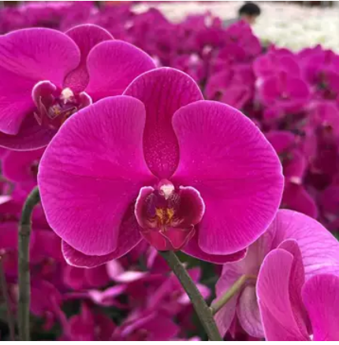
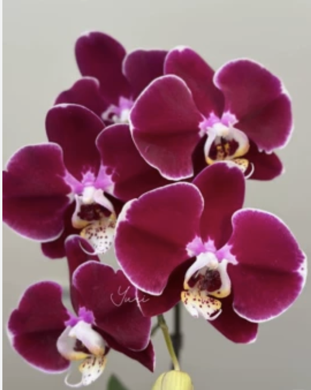
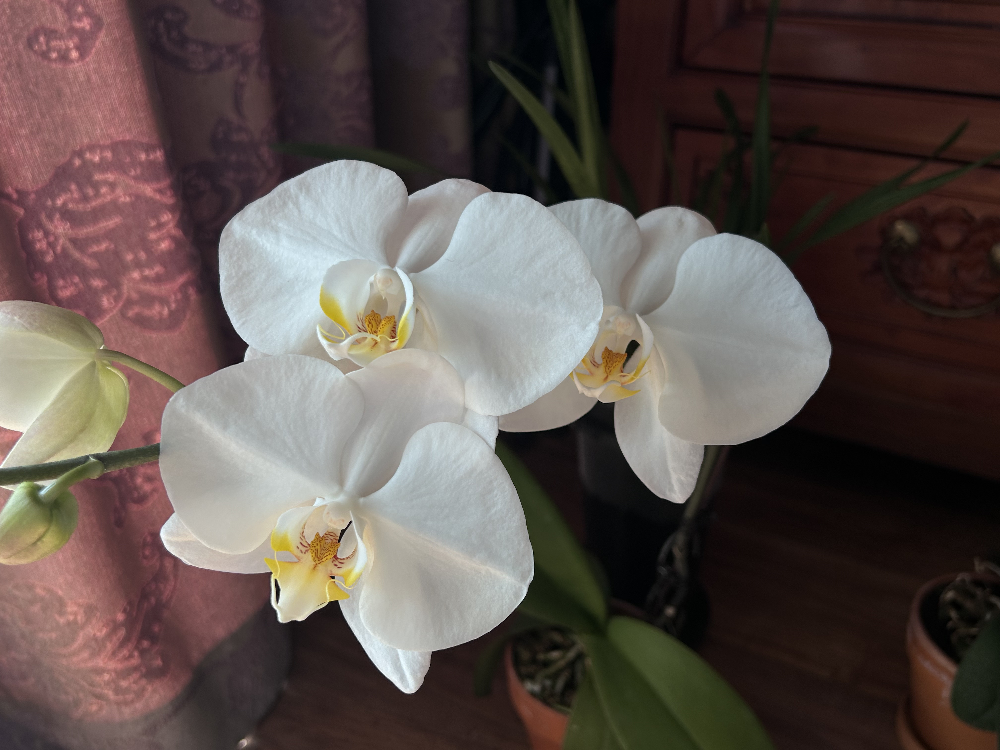

欢迎来到我家的蝴蝶兰线上图鉴(Welcome to my online Phalaenopsis guide)

经典的深红花色，花瓣厚实。今年开得格外喜庆，花朵直径足足有 10 厘米，非常霸气(The classic deep red flower color has thick petals. This year, the flowers are blooming especially joyfully. The diameter of the flowers is as large as 10 centimeters, which is very imposing)

带有迷人的复古条纹，花心是深紫色的(With charming retro stripes, the center of the flower is deep purple)

大花型，价格便宜，皮实好养，花心黄色，其余为纯白色，推荐新手养(Large-flowered type, inexpensive, hardy and easy to care for. The center of the flower is yellow, while the rest is pure white. Recommended for beginners to grow)